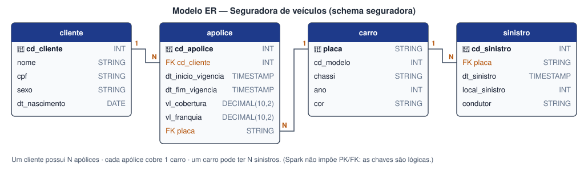

Cenário e dados¶
O negócio¶
Uma seguradora de veículos mantém clientes, carros, apólices (contratos de seguro) e sinistros (acidentes, roubos...). Queremos guardar esses dados em um lakehouse e conseguir inserir, corrigir e apagar registros com segurança, mantendo histórico das alterações.
Modelo ER¶

erDiagram
CLIENTE ||--o{ APOLICE : contrata
CARRO ||--o{ APOLICE : "é coberto por"
CARRO ||--o{ SINISTRO : sofre
CLIENTE {
int cd_cliente PK
string nome
string cpf
string sexo
date dt_nascimento
}
APOLICE {
int cd_apolice PK
int cd_cliente FK
timestamp dt_inicio_vigencia
timestamp dt_fim_vigencia
decimal vl_cobertura
decimal vl_franquia
string placa FK
}
CARRO {
string placa PK
int cd_modelo
string chassi
int ano
string cor
}
SINISTRO {
int cd_sinistro PK
string placa FK
timestamp dt_sinistro
int local_sinistro
string condutor
}| Tabela | Linhas | Descrição |
|---|---|---|
cliente |
20.010 | Pessoas que contratam seguros |
carro |
10.001 | Veículos segurados |
apolice |
10.000 | Contrato que liga 1 cliente a 1 carro, com vigência, cobertura e franquia |
sinistro |
10.000 | Ocorrências envolvendo um carro (data, município IBGE, condutor) |
Chaves no Spark
O Spark não impõe chaves primárias nem estrangeiras. As chaves do modelo são lógicas:
servem para os JOINs e para as condições de UPDATE, DELETE e MERGE.
Origem do dataset¶
Reaproveitamos o banco do laboratório de Modelagem Dimensional da disciplina
(script_relacional.sql, SQL Server, ~16 MB, com dados fictícios gerados para a aula). O script tem
milhares de comandos INSERT [relacional].[tabela] (...) VALUES (...) em T-SQL.
Como o Spark não executa T-SQL, criamos o script scripts/converter_sql_para_csv.py, que:
- lê cada linha
INSERTdo arquivo; - separa os valores respeitando aspas e parênteses;
- converte literais T-SQL —
N'texto',CAST(N'2025-02-01T15:25:41.000' AS DateTime),CAST(554382.00 AS Numeric(10, 2)),NULL— em valores simples; - remove o preenchimento de colunas
CHAR('HEG0631 '→HEG0631); - grava
data/raw/<tabela>.csv.
cliente 20010 linhas -> data/raw/cliente.csv
carro 10001 linhas -> data/raw/carro.csv
apolice 10000 linhas -> data/raw/apolice.csv
sinistro 10000 linhas -> data/raw/sinistro.csv
Na leitura, o Spark usa um schema explícito (em src/spark_delta_iceberg/dados.py) em vez de
inferir tipos — assim o CPF continua texto (não perde zeros à esquerda) e os valores ficam em
DECIMAL(10,2).
DDL das tabelas¶
O DDL é praticamente igual nos dois formatos. As diferenças estão destacadas abaixo.
CREATE DATABASE IF NOT EXISTS seguradora;
CREATE TABLE IF NOT EXISTS seguradora.cliente (
cd_cliente INT NOT NULL COMMENT 'PK - código do cliente',
nome STRING COMMENT 'Nome completo',
cpf STRING NOT NULL COMMENT 'CPF (texto para manter zeros à esquerda)',
sexo STRING COMMENT 'M/F',
dt_nascimento DATE COMMENT 'Data de nascimento'
) USING DELTA
COMMENT 'Clientes da seguradora';
CREATE TABLE IF NOT EXISTS seguradora.carro (
placa STRING NOT NULL COMMENT 'PK - placa do veículo',
cd_modelo INT COMMENT 'Código do modelo',
chassi STRING NOT NULL COMMENT 'Número do chassi',
ano INT COMMENT 'Ano de fabricação',
cor STRING COMMENT 'Cor do veículo'
) USING DELTA
COMMENT 'Veículos segurados';
CREATE TABLE IF NOT EXISTS seguradora.apolice (
cd_apolice INT NOT NULL COMMENT 'PK - número da apólice',
cd_cliente INT NOT NULL COMMENT 'FK -> cliente',
dt_inicio_vigencia TIMESTAMP COMMENT 'Início da vigência',
dt_fim_vigencia TIMESTAMP COMMENT 'Fim da vigência',
vl_cobertura DECIMAL(10,2) COMMENT 'Valor de cobertura (R$)',
vl_franquia DECIMAL(10,2) COMMENT 'Valor da franquia (R$)',
placa STRING COMMENT 'FK -> carro'
) USING DELTA
COMMENT 'Apólices: ligam 1 cliente a 1 carro';
CREATE TABLE IF NOT EXISTS seguradora.sinistro (
cd_sinistro INT NOT NULL COMMENT 'PK - código do sinistro',
placa STRING NOT NULL COMMENT 'FK -> carro',
dt_sinistro TIMESTAMP COMMENT 'Data/hora da ocorrência',
local_sinistro INT COMMENT 'Código IBGE do município',
condutor STRING COMMENT 'Nome do condutor'
) USING DELTA
COMMENT 'Sinistros (ocorrências) por veículo';
CREATE NAMESPACE IF NOT EXISTS iceberg.seguradora; -- (1)!
CREATE TABLE IF NOT EXISTS iceberg.seguradora.cliente (
cd_cliente INT NOT NULL COMMENT 'PK - código do cliente',
nome STRING COMMENT 'Nome completo',
cpf STRING NOT NULL COMMENT 'CPF (texto para manter zeros à esquerda)',
sexo STRING COMMENT 'M/F',
dt_nascimento DATE COMMENT 'Data de nascimento'
) USING iceberg
COMMENT 'Clientes da seguradora';
CREATE TABLE IF NOT EXISTS iceberg.seguradora.carro (
placa STRING NOT NULL COMMENT 'PK - placa do veículo',
cd_modelo INT COMMENT 'Código do modelo',
chassi STRING NOT NULL COMMENT 'Número do chassi',
ano INT COMMENT 'Ano de fabricação',
cor STRING COMMENT 'Cor do veículo'
) USING iceberg
COMMENT 'Veículos segurados';
CREATE TABLE IF NOT EXISTS iceberg.seguradora.apolice (
cd_apolice INT NOT NULL COMMENT 'PK - número da apólice',
cd_cliente INT NOT NULL COMMENT 'FK -> cliente',
dt_inicio_vigencia TIMESTAMP COMMENT 'Início da vigência',
dt_fim_vigencia TIMESTAMP COMMENT 'Fim da vigência',
vl_cobertura DECIMAL(10,2) COMMENT 'Valor de cobertura (R$)',
vl_franquia DECIMAL(10,2) COMMENT 'Valor da franquia (R$)',
placa STRING COMMENT 'FK -> carro'
) USING iceberg
COMMENT 'Apólices: ligam 1 cliente a 1 carro'
TBLPROPERTIES ( -- (2)!
'format-version' = '2',
'write.delete.mode' = 'merge-on-read',
'write.update.mode' = 'merge-on-read',
'write.merge.mode' = 'merge-on-read'
);
CREATE TABLE IF NOT EXISTS iceberg.seguradora.sinistro (
cd_sinistro INT NOT NULL COMMENT 'PK - código do sinistro',
placa STRING NOT NULL COMMENT 'FK -> carro',
dt_sinistro TIMESTAMP COMMENT 'Data/hora da ocorrência',
local_sinistro INT COMMENT 'Código IBGE do município',
condutor STRING COMMENT 'Nome do condutor'
) USING iceberg
PARTITIONED BY (years(dt_sinistro)) -- (3)!
COMMENT 'Sinistros (ocorrências) por veículo';
- No Iceberg a tabela é referenciada como
catalogo.namespace.tabela. O catálogoicebergé configurado naSparkSession. - Merge-on-read: UPDATE/DELETE gravam delete files em vez de reescrever os Parquet. Veja Apache Iceberg.
- Hidden partitioning: o Iceberg deriva o ano de
dt_sinistrosozinho. Veja Apache Iceberg.